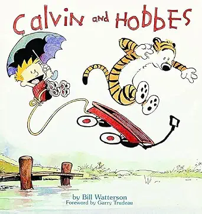
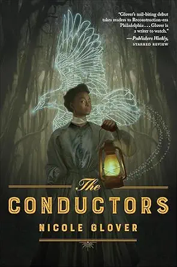
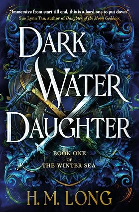
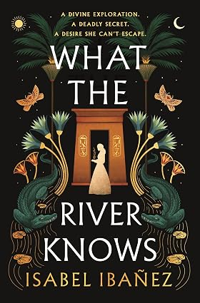
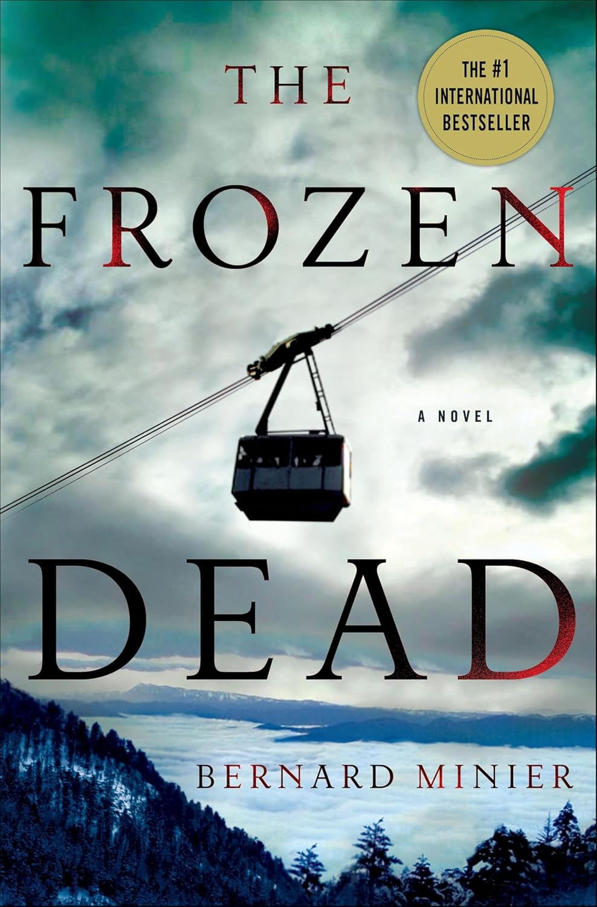

Ayudo a los autores a construir descubribilidad, sistemas de crecimiento de audiencia, infraestructura de lanzamiento y engagement de lectores a largo plazo en múltiples mercados editoriales. La documentación detallada de rendimiento está disponible durante el proceso de solicitud donde la autorización del cliente lo permita.
Nota del portafolio
Los compromisos abajo representan proyectos seleccionados en mercados editoriales. Ciertas cifras de ventas, movimientos de ranking de retailer y detalles de estrategia propietaria permanecen confidenciales y se comparten privadamente cuando es apropiado.
Mercado de Idioma Inglés
Ficción Literaria y Cómics
Estrategia de Descubribilidad Digital
Consultoría estratégica enfocada en descubribilidad digital, visibilidad de catálogo y posicionamiento de audiencia contemporánea para un cuerpo de trabajo legado.
Áreas de Enfoque
- Estrategia de descubribilidad
- Posicionamiento de catálogo
- Revisión de metadatos
- Visibilidad en búsqueda

Calvin and Hobbes
Ficción Contemporánea
Arquitectura de Audiencia de Lanzamiento
Arquitectura de audiencia en etapa de lanzamiento diseñada para establecer adquisición temprana de lectores y crecimiento de suscriptores antes de la publicación.
Áreas de Enfoque
- Embudo de adquisición
- Sistema de captura de email
- Preparación de lanzamiento
- Fundación de audiencia
Misterio Histórico
Estrategia de Retención de Serie
Estrategia de visibilidad enfocada en series y retención de lectores apoyando la descubribilidad a largo plazo a través de múltiples títulos.
Áreas de Enfoque
- Posicionamiento de serie
- Retención de lectores
- Visibilidad de backlist
- Planificación de embudo

The Conductors
Fantasía Épica
Diferenciación de Género
Estrategia de diferenciación de género desarrollada para un mercado de fantasía competitivo con énfasis en engagement de lectores y visibilidad de categoría.
Áreas de Enfoque
- Posicionamiento de género
- Optimización de categoría
- Engagement de lectores
- Ecosistema de reseñas

Dark Water Daughter
Mercado Editorial Italiano
Fantasía Histórica / IT
Localización de Mercado
Planificación de visibilidad para mercado italiano y soporte de localización para descubribilidad dentro de ambientes de retail en idioma italiano.
Áreas de Enfoque
- Localización de mercado
- Descubribilidad italiana
- Localización de metadatos
- Posicionamiento de retail

What the River Knows
Mercado Editorial Español
Crimen y Thriller Psicológico / ES
Revitalización de Backlist
Estrategia de visibilidad de larga cola y engagement de backlist apoyando el descubrimiento sostenido de lectores en mercados de habla hispana.
Áreas de Enfoque
- Visibilidad de backlist
- Re-engagement de lectores
- Marketing evergreen
- Consistencia de marca
Mercado Editorial Francés
Thriller Psicológico / FR
Alineación de Mercado Digital
Estrategia de mejora de descubribilidad digital alineada con el comportamiento de búsqueda de retail de thriller en idioma francés.
Áreas de Enfoque
- Posicionamiento de keywords
- Descubribilidad de retail
- Alineación de audiencia
- Visibilidad de categoría

The Frozen Dead
Mercado Editorial Alemán
Thriller Juvenil / DE
Expansión de Mercado Alemán
Coordinación de descubribilidad en idioma alemán y engagement de lectores a través de puntos de contacto de retail y crecimiento de audiencia.
Áreas de Enfoque
- Descubribilidad alemana
- Engagement de lectores
- Planificación de reseñas
- Visibilidad de serie